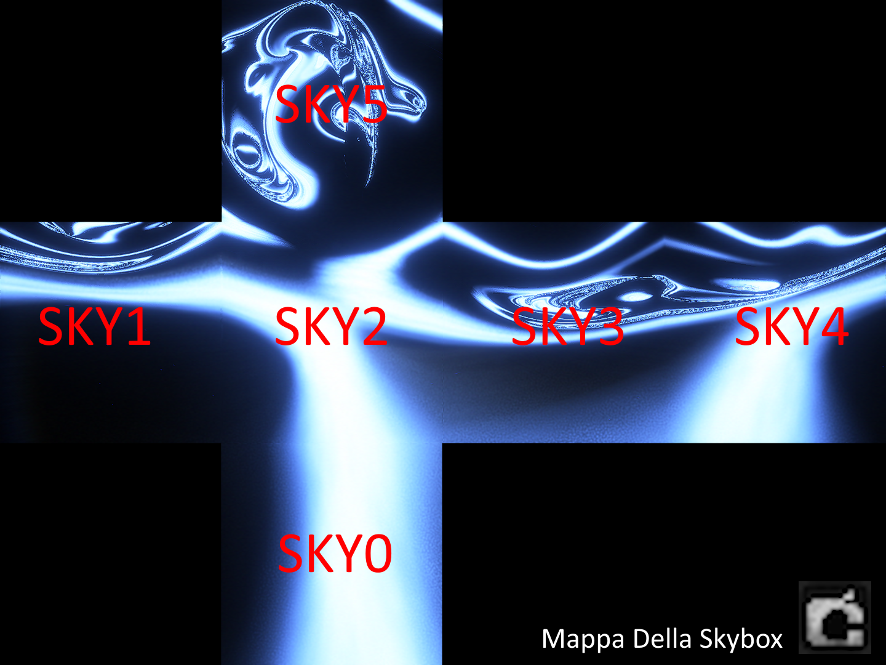

Grejang
Grejang, ispirata da TBoTV è la mia associazione, facciamo mods, reattori nucleari al Voidimium, skybases, e tutto cio relativo a TBoTV e ovviamente questo sito
Grejang ha il quartier generale a Sky5 a W.A.H.Q. ed è a capo delle 6 skybases, Moon Base Delta e Deltaquest
Grejang nella lore è nata dal hijack della Mojang che ha poi formato la Mojang moderna, Grejang e RubyG (RubyG è attualmente a capo del mio migliore amico WillTGC)
N.I.S.B. è un settore di Grejang che si occupa del contenimento delle entità del void e controllo delle Corrupted Moons
ASYNC invece (deriva dalla serie delle Backrooms) ed è stata recentemente spostata a Sky2 e si occupa dell'analisi del fenomeno delle Backrooms
Cosè la Skybox
Probabilmente ora siete confusi assai su che diamine stia parlando quindi uso questa sezione per spiegarvi cosè la skybox in maniera accurata
La skybox è il cielo, infatti nella lore di TBoTV il cielo è un cubo fisico che circonda la terra, fuori da questo cubo si trovano le Skybases dove gli Admins controllano che la skybox funzioni correttamente. All'esterno della skybox è tutto buio dove spiccano solo gli avamposti e le skybase degli admins, L'aria è formata per il 90% da ossigeno, 9% altri gas e 1% Voidimium, quest'ultimo esplode se a contatto con una fiamma

Essendo un cubo ha 6 faccie: Sky0 è il void, Sky1, 2, 3, 4, 5 sono i 5 cieli
- Sky0: Qua si trova Skybase0 e il Void Bridge
- Sky1: Qua si trovano Skybase1 e i 6 reattori al voidimium che alimentano le skybases
- Sky2: Era la skybase meno utilizzata ma grazie al recente spostamento di ASYNC dalla california a Sky2 ora ha un utilizzo
- Sky3: Qua si trova VoidCONTAMINATE ovvero il centro di contenimento delle entità del void (integrities, subugates, disruptors) e ha un Reattore al Voidimium tutto suo conesso a Sky1, infatti qualsiasi azione eseguita su esso impiega 20 secondi ad arrivare
- Sky4: Comprende Sky4, La skybase piu grande fra tutte e contiene ADMINSPACE
- Sky5: Questo cielo ha il quartier generale di Grejang e Will And Adam's Head Quarters, conosciuta perche ha l'unico parco botanico di tutta la skybox
- MB Delta 2.0: Questa è una skybase ma posizionata sul lato posteriore della luna, è un assoluto epicentro di entità del void ed è continuamente sotto attacco, importante anche l'incidente in cui MB Delta si è capovolta a causa di una luna corotta portando alla ricostruzione nella MB Delta 2.0
- Il team di SkyBase, ADMINSPACE, MB delta e DeltaQuest
- Adam